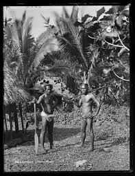
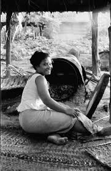
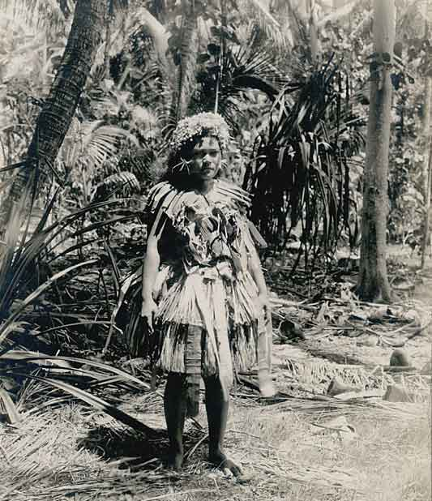
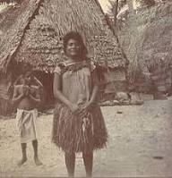

Introducing each of them

This is my dad "Manuila"
This is my dad a son out 12 siblings, a son to Matau and Sasa. he is one of the bravest known in the whole country. He is from an atoll called Nanumea.

This is my Mother "Temukisa"
She is from one of the atoll in Tuvalu called Nukulaelae. She is a daughter of Tulaga and Loi, the oldest child in her family our of 5 of them two boys and 3 girls.

This my aunty "Auli"
She is my Dad youngest sister, very talented in the family and she probably the smartest out of all in the family. She now married to Kivoli with one child known as Heitonga.

This is my grandma "Matau"
This is my Dad's mother Matau, one of a well known in Nanumea. She is married to Sasa with 12 kids 10 boys and 2 girls.